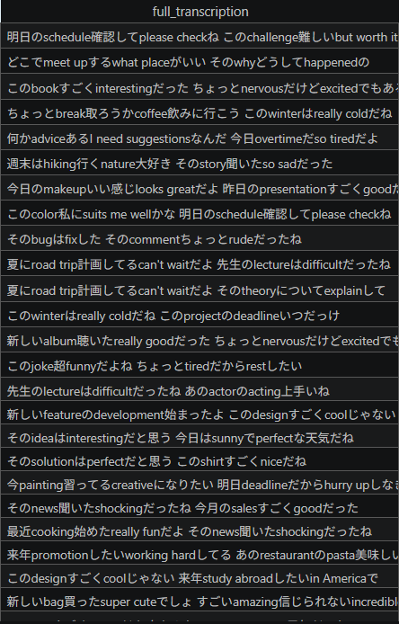
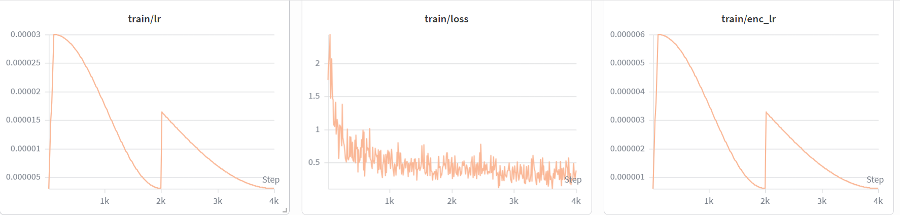
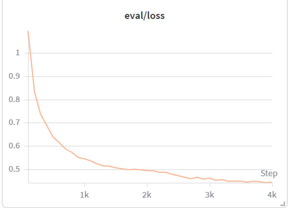

オンデバイス 日英コードスイッチング 音声認識 On-device EN–JP code-switching speech recognition
LiquidAI/LFM2.5-Audio-1.5B-JP をファインチューンし、混在した二言語音声をそれぞれ正しい文字体系のまま文字起こしする — 完全オンデバイス、プライバシー保護。 Fine-tuning LFM2.5-Audio-1.5B-JP to transcribe bilingual speech, keeping each language in its own script — fully on-device, private.
クラウド音声認識は日本語の二言語音声を壊す Cloud ASR mangles bilingual Japanese speech
英語が katakana に化けるEnglish → katakana garble
日本語の会議には英語が頻繁に混ざる。一般的なASRは英語を無理にカタカナへ変換し、少数言語を落とす — 文字起こしが読めなくなる。 Meetings mix in English constantly; generic ASR force-converts it to katakana and drops the minority language.
APPI: クラウドに送れないAPPI: can't send it to the cloud
個人情報保護法（APPI）の下、機密の会議音声は端末から出せないことが多く、クラウドASRは選択肢にならない。 Under Japan's APPI, confidential meeting audio often can't leave the device — ruling out cloud ASR.
エッジで動く基盤モデルA foundation model that runs on the edge
ハイブリッド SSM + AttentionHybrid SSM + attention
純粋なAttentionのコストなしに長文脈を効率処理。Efficient long-context processing without pure-attention cost.
FastConformer + 言語モデルAudio-native FastConformer + LM
音声エンコーダが言語モデルに直結 — 1モデルで聞いて書く。Encoder feeds the LM directly — one model hears and writes.
オンデバイス・プライベートOn-device & private
ノートPC/エッジでローカル動作 — 低遅延、音声は端末外に出ない。Runs locally — low latency, audio never leaves the machine.
-JP 特化ベースThe -JP variant
日本語特化の基盤 — 二言語アシスタントの正しい出発点。A Japanese-specialized base — the right starting point.
効くのは音声エンコーダへの LoRALoRA where it counts — the audio encoder
r=8 LM + r=32 Conformer LoRA
ベースを凍結し、PEFTで言語モデルとConformer音声エンコーダの両方にLoRA。encoderのrank-32がグラウンディングを改善した。 Frozen base + LoRA on both the LM and the Conformer encoder — encoder rank-32 fixed the grounding.
合成データ × FLEURSSynthetic data × FLEURS
自作の合成 CS/EN/JA データに FLEURS の学習セットを混合して訓練。評価は FLEURS から作った独自評価セットで実施。統一プロンプト "Perform ASR."、学習はHugging Face GPU上。 Mixed FLEURS train data into our synthetic CS/EN/JA corpus; evaluated on a custom FLEURS-derived eval set. One "Perform ASR." prompt, trained on Hugging Face GPUs.
凍結ベンチマーク: CS-FLEURS（196 CS）+ FLEURS ja_jp / en_us（各200）— 整合した忘却コントロール。 Frozen benchmark: CS-FLEURS (196) + FLEURS ja_jp/en_us (200 each) — a matched forgetting control.

安定した収束 — Hugging Face GPU 上で学習Stable convergence — trained on Hugging Face GPUs


学習・検証ロスがともに滑らかに低下 — 過学習なく収束。最良チェックポイントは英語モノリンガルWERで早期停止して選択。 Training and validation loss both fall smoothly — converges without overfitting. The best checkpoint is chosen by early-stopping on English-mono WER.
コードスイッチで Whisper超え、日本語も忘れないBeats Whisper on code-switching — without forgetting Japanese
| コードスイッチング · CS | 日本語 JA-only | 英語 EN-only | |||||
|---|---|---|---|---|---|---|---|
| Model | SA↑ | MER↓ | EnWER↓ | CER↓ | WER↓ | WER↓ | SA↑ |
| LFM2.5-Audio (base) | 37.4 | 67.3 | 98.1 | 6.6 | 7.6 | 68.5 | 67.8 |
| Whisper large-v3 (base) | 64.6 | 40.9 | 47.4 | 6.0 | 7.9 | 4.2 | 99.1 |
| LFM + LoRA · data-aug | 43.6 | 54.3 | 96.2 | 8.2 | 8.7 | 80.2 | 79.2 |
| LFM + LoRA · + encoder LoRA | 61.8 | 54.1 | 113.5 | 9.4 | 10.2 | 73.1 | 77.9 |
| LFM + LoRA · r32 + FLEURS | 80.8 | 27.0 | 52.3 | 6.4 | 7.2 | 37.1 | 94.6 |
SA = Script Accuracy（英語をLatinで保持） · 段階的改善: 拡張(+6 SA) → encoder LoRA(+24) → r32 + FLEURS(+43)
同じ音声 — 読める vs 文字化けSame audio — readable vs garbled
✅ 我々のモデルは英語をLatinのまま正確に。 ✗ ベースラインはすべての英語をカタカナに変換、または英語節を丸ごと脱落。 ✅ Ours keeps English in Latin, accurately. ✗ Baselines katakana-force every English term — or drop the English clause entirely.
本命は CS-ASR — そこで SoTA Whisper を超えたOur core task is code-switch ASR — where we beat SoTA Whisper large-v3
Ryzen PC の CPU上で FP32 GGUF 形式（量子化なし、約 6 GB RAM）で動作。1つの音声ベースに 1%未満の小さなLoRAを差し替えるだけで、省エネに会議用途の8タスクを担う。ただしボーナスタスクは専用モデルほどの精度ではない。 Runs on a Ryzen PC's CPU in FP32 GGUF (no quantization, ~6 GB RAM). One audio base + swappable <1% LoRA adapters → one energy-efficient model for all 8 tasks. The bonus tasks aren't as strong as dedicated models — yet.
翻訳して話す — データ戦略Translate-and-speak — data strategy
1パスで翻訳＋発話Translate + speak in one pass
同じ音声ベースにLoRAアダプタを追加。ソーステキストから翻訳テキストと音声を同時生成。A LoRA adapter on the same audio base — source text → translated text and speech together.
蒸留ペア × 実音声Distilled pairs × real audio
既存の翻訳ラベルから蒸留したテキストペア＋ターゲット言語の音声。合成（Kokoro-82M）から実スタジオ音声へ移行。Distilled translation text pairs + target-language audio — moving from synthetic (Kokoro-82M) to real studio speech.
実音声で品質向上Real audio lifted quality
5,509ペア + 実英語音声 LibriTTS-R 2,500本 → 合成のみのv3を上回る。日本語は Common Voice JA を追加。評価は chrF + 逆翻訳ASR。5,509 pairs + 2,500 real LibriTTS-R English wavs → beat synthetic-only v3; Common Voice JA added for Japanese. Eval: chrF + round-trip ASR.
データは全て合成／蒸留、または許諾ライセンスのHuggingFaceデータセット — 独自コーパスは同梱せず、スクリプトから再現可能。 All data is synthetic/distilled or permissively-licensed HF datasets — no proprietary corpora shipped, fully reproducible from the scripts.
会議 Kaigi — オンデバイス会議アシスタントAn on-device meeting assistant
リアルタイムCS-ASRLive code-switched ASR
二言語をそれぞれ正しい文字体系で即時に文字起こし。Real-time bilingual transcription, each in its correct script.
翻訳して話すTranslate & speak
日↔英をワンパスで翻訳・発話。相手言語で即座に再生。One-pass JA↔EN translate-and-speak, played live.
自動 議事録Auto minutes
会議終了時に端末上で構造化された議事録を生成。Structured minutes generated on-device at the end.
カスタマーサポート — 機密な二言語通話の文字起こし。Customer support — private bilingual calls.
医療 / 法務 — 機密、端末外に出ない。Medical / legal — confidential, on-device.
教育 — 二言語講義の記録とノート。Education — bilingual lecture capture.
二言語の音声を、
正しい文字で、
あなたの端末で。
Bilingual speech, in the right script, on your device.
LFM2.5-Audio + LoRA → コードスイッチ Script Accuracy 80.8%、日本語も維持、完全プライベート。 LFM2.5-Audio + LoRA → 80.8% code-switch Script Accuracy, Japanese intact, fully private.
TRAINED ON HUGGING FACE GPUs · RUNS ON-DEVICE